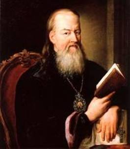

Митрополит Гавриил (Петров-Шапошников)
Из И.К. Степановский Вологодская старина
В 1695 "Июля в 20 день по велению государя Петра Алексеевича взяты в синодальные певчие в Москву устюжане Федор Шапошников с малолетним сыном Петром да протодьякон Михаил Сурна"....
"От певчаго Петра Шапошникова в 1730 г. Мая 13 дня родился в Москве сын Петр, бывший в последствии Высоко преосвященный Гавриил (Петров) митрополит Новгородский и С.-Петербургский".
С сайта Электронная энциклопедия «Культура Ленинградской области» / Гавриил (Петров-Шапошников) (1730-1801), митрополит, церковный деятель

Гавриил (Петров-Шапошников Петр Петрович; 1730–1803), митрополит, церк. деятель. Родился в семье священника, в 1753 окончил Славяно-греко-латинскую академию в Москве. С 1754 работал в Синодальной типографии, с 1758 – учитель риторики в Троицкой духовной семинарии. В 1758 первый лаврский соборный иеромонах, ректор Троицкой духовной семинарии и учитель богословия, наместник Троице-Сергиевой лавры. В 1761 назначен ректором Славяно-греко-латинской академии и архим. Заиконоспасского мон. в Москве. В 1763 – еп. Тверский, назначен чл. Комиссии по составлению новых законов (1765), Комиссии по подготовке училищной реформы (1766). Депутат от Св. Синода в Комиссии по составлению нового Уложения (1768). С 1769 чл. Синода. С 1770 – архиеп. С.-Петербургский и Ревельский, с 1775 – также архиеп. Новгородский и первенствующий член Синода. С 1783 – митр. Новгородский, С.-Петербургский и Олонецкий. Оказывал большое влияние на церк. политику Екатерины II. С 1774 руководил стр-вом Александро-Невского мон., возведенного по его ходатайству в 1797 в степень лавры. В 1788 соединил Петерб. и Новгородскую духовные семинарии в одну – Главную (в 1797 преобразована в С.-Петерб. ДА). Содействовал учреждению единоверия, заботился о духовном просвещении и миссионерском деле. При Г. к С.-Петерб. епархии присоединены Коневский Рождество-Богородицкий, Валаамский и Череменецкий Иоанно-Богословский мон. Крупный ученый-богослов, философ, церк. историк, археолог и филолог, автор многих опубл. трудов, инициатор изд. сборника аскетических творений «Добротолюбие» (1793). В 1776 избран почетным, в 1783 – д. ч. АН, неофициально временно был ее вице-през. и през. Являлся пред. ученой комиссии по составлению словаря рус. языка. Первым принес присягу Павлу I при вступлении его на имп. престол. Позднее попал в опалу. В 1800 по прошению удалился на покой с увольнением из членов Синода. Скончался в Новгороде, погребен в Новгородском Софийском соборе.Лит.: Очерки истории Санкт-Петербургской епархии. СПб., 1994. С. 94-100; Рункевич С.Г. Свято-Троицкая Александро-Невская лавра. 1713–1913. СПб., 2001. С. 23-30, 245-248; Руководители Санкт-Петербурга. СПб., 2003. С. 291-293.
М.В. Шкаровский, А.В. Берташ